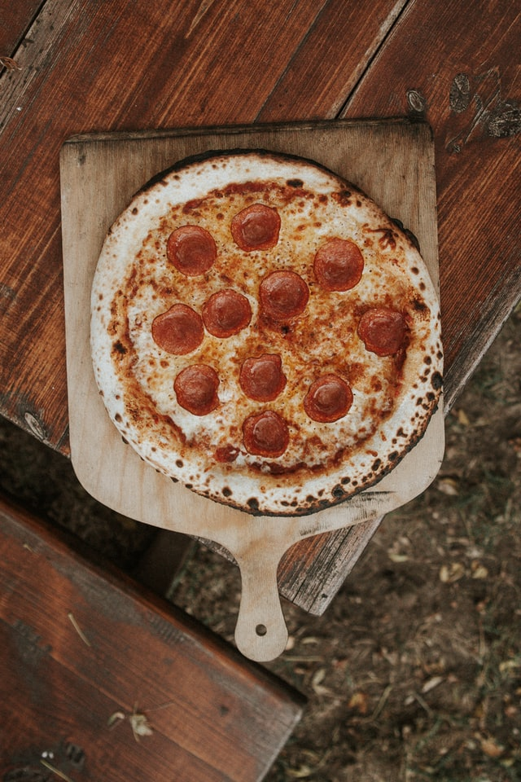

Pepperoni Pizza

Description
Ingredients
- 1/2 (12 ounce) can CONTADINA® Tomato Paste
- 1 teaspoon dried oregano, crushed
- 1 teaspoon dried basil, crushed
- 1/2 teaspoon garlic powder
- 1/2 teaspoon onion powder
- 1/2 teaspoon sugar
- 1/2 teaspoon salt
- 1/4 teaspoon black pepper
Steps
-
For sauce: Combine all sauce ingredients with 1/2 cup water in a medium bowl; set aside for flavors to develop
while making crust. Freeze remaining paste.
-
For crusts: Combine 2 cups of flour with the dry yeast, sugar and salt. Add the water and oil and mix until well
blended (about 1 minute). Gradually add enough remaining flour slowly, until a soft, sticky dough ball is
formed.
-
Knead for about 4 minutes, on a floured surface, until dough is smooth and elastic. Add more flour, if needed.
(If using RapidRise® Yeast, let dough rest, covered, for 10 minutes.).
-
Divide dough in half. Pat each half (with floured hands) into a 12-inch greased pizza pan OR roll dough to fit
pans.
- For pizzas: Preheat oven to 425 degrees F. Top crusts with sauce, pepperoni and cheese.
-
Bake for 18 to 20 minutes until crusts are browned and cheese is bubbly. For best results, rotate pizza pans
between top and bottom oven racks halfway through baking.